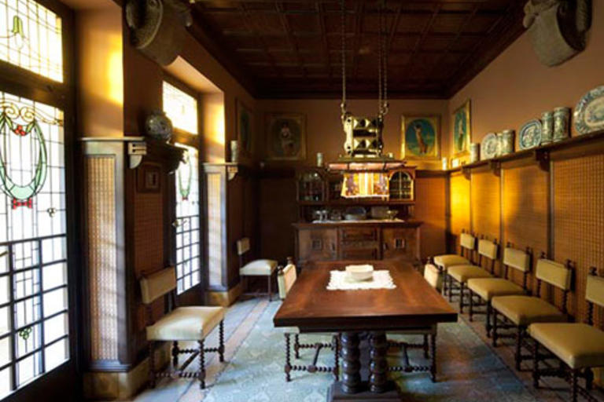

Visita · Girona
Casa natal de Rafael Masó (1880-1935), una de les obres més importants de la seva arquitectura i l'única que està oberta al públic de les famoses cases del riu de Girona. La casa s'ha conservat…